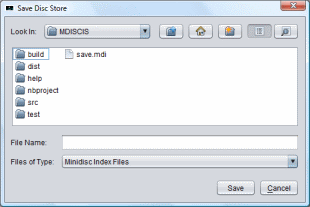

To save a disc store, click on the "File" menu in the menu bar and click "Save". The dialog box shown in the picture above will be displayed on screen. Navigate to the folder where you want to save the disc store as an MDISCIS Index File and give it a name. Finally, click the "Save" button. A message will be displayed in the status bar at the bottom of the main screen stating whether or not the disc store was saved successfully.